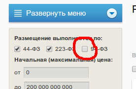
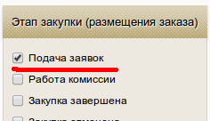
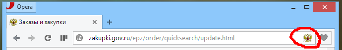
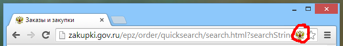
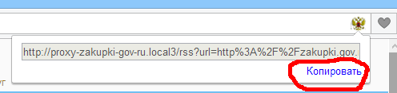
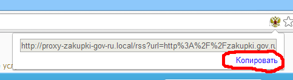
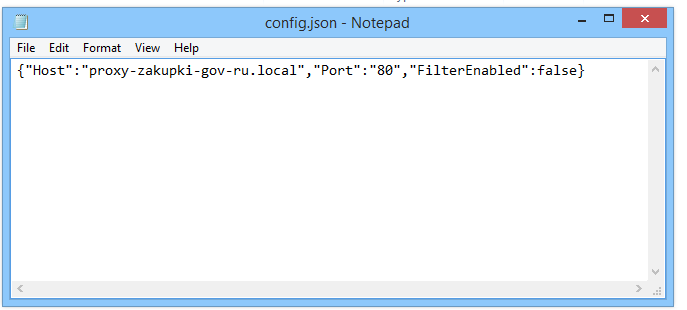
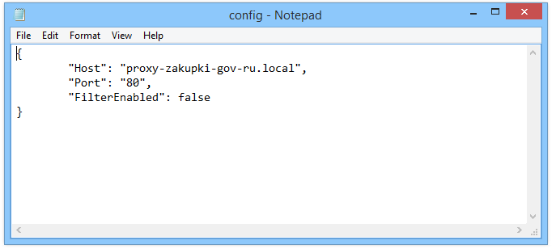

Внимательный Поставщик 2.1
- Автор: Пушкин Иван <pushkin13@bk.ru>
- Версия: 2.1
- Внимательный поставщик помогает мониторить закупки
- Вы можете фильтровать закупки по: наименованию, ОКДП, ОКПД, наименованию закащика
- Работает с RSS клиентом
- Внимательный поставщик является локальным прокси сервером для сайта zakupki.gov.ru
- ОС: Windows 7, Windows 8
- Язык программирования: Golang
- Исходный код на bitbucket.org
- Если у вас не установлен RSS клиент, его надо установить
- Запустите установщик Внимательного Поставщика и он все сделает сам
- Вы также можете установить расширение для webkit-браузера (Google Chrome, Opera, Yandex Browser, Amigo), с помощью которого можно быстро подписываться на новые закупки
Пока расширение нельзя скачать с официальных сайтов расширений браузеров. Вы можете скачать его из репозитория Внимательного Поставщика. Там же выложен исходный код расширения
- Скачайте из репозитория на bitbucket.org файл расширения
- Откройте в вашем webkit-браузере (Google Chrome, Opera, Yandex Browser, Amigo) страничку "Расширения" (или "Extensions")
- Перетащите файл расширения на открытую страничку расширений
- Подтвердите установку расширения
В общем, работа с Внимательным Поставщиком выглядит так же как и работа с электронной почтой. Только нет спама. Вы подписываетесь на закупки выбирая страницу прямо на сайте zakupki.gov.ru: преобразовываете адрес и подписываетесь на него в своем RSS клиенте. Во время работы с лентой закупок, Внимательный Поставщик должен быть запущен, иначе, пока Вы не запустите его, новые закупки не будут поступать в ленту
Итак, у Вас уже установлены и запущены какой-либо удобный Вам RSS клиент и Внимательный Поставщик и в правом нижнем углу вы видите иконку:

- Перейдите на сайт закупок zakupki.gov.ru
- Наберите нужный Вам запрос

- Установите нужные фильтры


- Нажмите на кнопку "Обновить результаты поиска"

- Если у вас установлено расширение для браузера, то:
- Нажмите на кнопку со значком Внимательного Поставщика в адресной строке браузера


- Скопируйте выведенную ссылку


- Если у вас не установлено расширение:
- Откройте генератор ссылок нажав ПКМ по значку Внимательного Поставщика в правом нижнем углу экрана


- Скопируйте адрес поисковой страницы закупок в большое текстовое поле генератора ссылок

- Нажмите на кнопку "Генерировать"

- Нажмите на кнопку "Копировать"
- Откройте RSS клиент
- Нажмите на кнопку для подписки на новую ленту
- В поле адреса нажмите ПКМ и выбирите "Вставить"
- Подтвердите подписку
- Откройте RSS клиент
- Выбирите интересующую вас ленту закупок
- Обновите ленту, если требуется
- Запустить прокси
Эта кнопка запускает Внимательного Поставщика: выводит его из "спячки" (снимает с "паузы")
- Остановить прокси
Эта кнопка приостанавливает (ставит на паузу) Внимательного Поставщика
- Включить фильтр
Эта кнопка включает все фильтры. Если фильтры не написаны, эта кнопка не имеет смысла
- Выключить фильтр
Эта кнопка отключает все фильтры
- Сбросить кэш
Внимательный Поставщик запоминает на какой закупке Вы остановились и не подгружает старые закупки, которые замедляют работу с лентой и все равно игнорируются RSS клиентом. Даже если вы удалите RSS клиент и поставите заново, Внимательный Поставщик не будет докучать Вам уведомлениями о закупках, которые Вы вероятно уже посмотрели. Кнопка "Сбросить кэш" изменяет это поведение. Внимательный Поставщик загрузит все возможные закупки и выдаст RSS клиенту. Если RSS клиент был переустановлен он загрузит все закупки, иначе он будет грузить только те закупки, которые вы не получали (правда гараздо медленней, чем обычно)
- Генератор ссылок
Эта кнопка запускает генератор ссылок
- Папка настроек
Эта кнопка откроет папку программы с настройками. Все настройки храняться в файлах, названия которых заканчиваются на ".json"
- Инструкция
Эта кнопка открывает инструкцию на Русском языке
- Выход
Эта кнопка дожидается завершения загрузки всех доступных закупок, затем останавливает работу Внимательного Поставщика и отключает программу (не более 0.5 сек)
Пока Внимательный Поставщик не имеет спецальной программы для настройки. Все настройки храняться в файлах ".json". Вы можете открыть эти файлы при помощи обычного "Блокнота". Хотя перенастройка может и не потребоваться
Каталог Внимательного Поставщика может содержать следующие ".json" файлы:
- config.json - хранит настройки прокси сервера
Открыв этот файл, Вы увидите следующие:

Можете отредактировать его так, чтобы удобнее было смотреть добавив немного whitespace:

"Host" - означает хост, на котором работает Внимательный Поставщик. Если захотите его изменить, не забудьте отредактировать hosts файл в папке windows
"Port" - означает порт, который слушает Внимательный Поставщик. Его не надо изменять: RSS клиенты работают только через порт 80
"FilterEnabled" - отвечает за включение и отключение фильтра закупок: true - фильтры включены, false - фильтры выключены
- filters.json - хранит все фильтры
Для настройки фильтров Вы можете использовать регулярные выражения. Это очень удобный и гибкий инструмент. Почитать подробнее про регулярные выражения Вы можете здесь. Впрочем, Вы можете просто попросить своего офисного айтишника написать Вам регулярные выражения. Просто скажите ему какие именно закупки Вы хотели бы отфильтровывать и дайте примеры.
Содержимое файла filters.json выглядит примерно так:

В кавычках название фильтра и затем через двоеточие в квадратных скобках перечисляются шаблоны: "Название": ["Шаблон1", "Шаблон2", "Шаблон3"]
Внимательный Поставщик использует следующие фильтры:
- "All" - шаблоны этого фильтра применяются к наименованию закупки, ОКДП, ОКПД, наименованию организации закащика. При совпадении закупка отсеивается.
- "OrderName" - шаблоны этого фильтра применяются к наименованию закупки
- "OKDP" - шаблоны этого фильтра применяются к ОКДП закупки, если ОКДП закупки было определено. Если ОКДП закупки не определено фильтр не применяется
- "OKPD" - шаблоны этого фильтра применяются к ОКПД закупки, если ОКПД закупки было определено. Если ОКПД закупки не определено фильтр не применяется
- "OrganisationName" - шаблоны этого фильтра применяются к наименованию организации закащика
При совпадении с каким-либо шаблоном какого-либо фильтра закупка отсеивается, то есть Вам она показана не будет
- cache.json - содержит кэш
Удалив этот файл и перезагрузив Внимательного Поставщика Вы очистите кеш
Если каких-либо файлов ".json" в каталоге нет, Вы можете их добавить. Если Ваши настройки не будут отличаться от настроек по умолчанию, Внимательный Поставщик не будет их хранить в файле и удалит добавленный Вами файл
Также в каталоге Внимательного Поставщика Вы можете найти файл prog.log. В этот файл записываются все ошибки